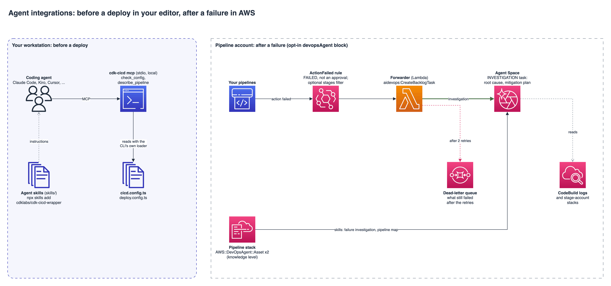
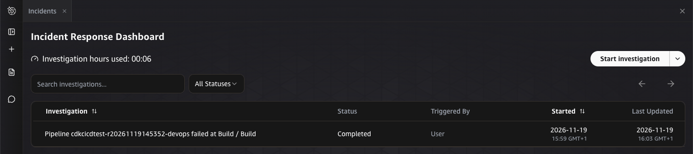
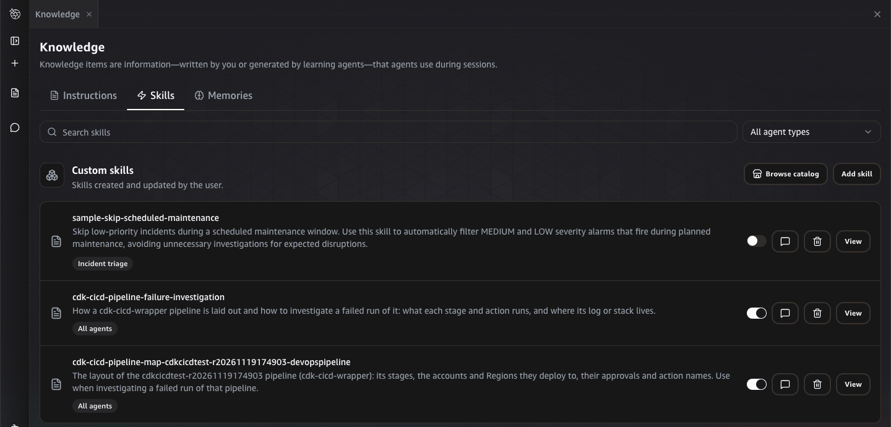
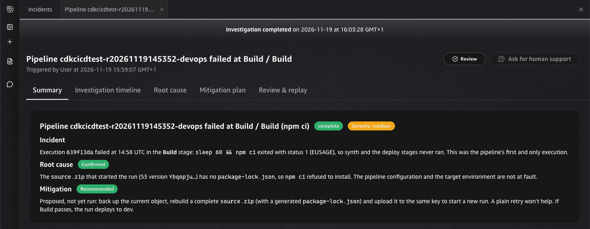
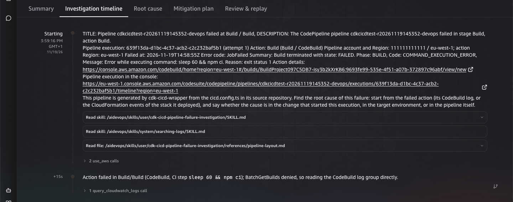
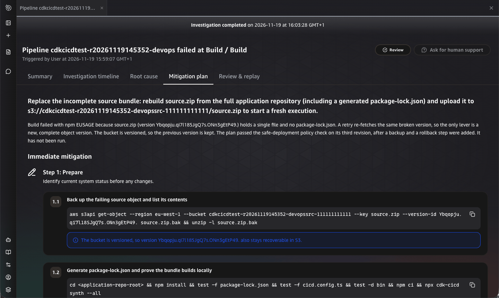

AWS DevOps Agent
When a pipeline action fails, the pipeline opens an
AWS DevOps Agent
investigation for it. Nobody has to notice the red stage first: DevOps Agent receives the failure (pipeline,
stage, action, error, links to the build log), reads the logs and stacks, and reports a root cause and a
mitigation plan in the Agent Space. DevOps Agent has no CodePipeline connector of its own; devopsAgent is
that connection.
It is off by default, and inside it every capability is a separate level that is on only when its block is present. Pick the ones you need:
| Level | What you get |
|---|---|
investigations |
Every failed pipeline action opens a DevOps Agent investigation (root cause, mitigation plan). |
knowledge |
The pipeline publishes skills into the Agent Space, so investigations start in the right log or stack. |
// cicd.config.ts
export default defineCICD({
application: 'my-app',
repository: Repository.codecommit('my-app'),
stages: ['dev', 'prod'],
devopsAgent: {
agentSpaceId: 'a1b2c3d4-EXAMPLE', // an Agent Space in the pipeline account
investigations: {}, // one investigation per failed action; `stages: ['prod']` to limit it
knowledge: {}, // publish the failure-investigation skill and a map of this pipeline
},
});
At a glance:
- Off by default. Without a
devopsAgentblock nothing is rendered: no rule, no function, no asset. - Small footprint. One EventBridge rule, one Lambda function that may call
aidevops:CreateBacklogTaskon your one Agent Space and nothing else, one SQS dead-letter queue, and the skill assets. All of it lives in the pipeline stack. - No new dependency. The function uses the AWS SDK that the Lambda Node.js runtime ships.
- Every CodePipeline shape. The
codepipelineandcdk-pipelinesengines, and container mode (Repo 2'sdeploy.config.tsand Repo 1's image build). Not thegithub-actionsengine, which renders no CodePipeline. - You set up the Agent Space. Create it in the pipeline account and associate the accounts it may investigate (see Before you start); the wrapper connects the pipeline to it.
A devopsAgent block that enables no level is rejected rather than silently doing nothing. Removing a level
removes what it deployed on the next pipeline deploy.
This is not the MCP server. cdk-cicd mcp helps a coding agent in your editor check
cicd.config.ts before a deploy. devopsAgent works in AWS, after a pipeline action has failed. The diagram
shows both:

What a level deploys
Everything goes into the pipeline stack, in the pipeline's account and Region.
investigations
- An EventBridge rule matching
CodePipeline Action Execution State Changeevents in stateFAILED, for this stack's pipelines only (the rule matches their ARNs), narrowed to the stages you choose. A rejected or timed-out manual approval also endsFAILED, but it is a decision, not an incident, so approvals are left out. - A Lambda function that turns each matching event into one
CreateBacklogTaskcall of typeINVESTIGATION. The task names the pipeline, stage, action, execution ID and attempt, the action's error code and summary, and links to the action and the execution in the console.

The investigation the forwarder opened for a failed Build action, in the Agent Space's operator web app.
The forwarder creates it through the CreateBacklogTask API, and the web app lists it as triggered by
"User".
The function comes with one SQS dead-letter queue (SQS-managed encryption, TLS only, 14 days retention). It
has no inbound endpoint and signs its calls with its own IAM role. That role may call
aidevops:CreateBacklogTask on your one Agent Space. Beyond that it can only write its own logs (the Lambda
basic execution policy) and send to its dead-letter queue. There is no webhook and no shared secret.
EventBridge retries delivery, and the function retries a failing call twice more within six hours. What
still fails lands in the dead-letter queue, so a missed task is visible rather than lost. Each request
carries an idempotency token derived from the action execution, so a redelivered event asks for the same task
again.
knowledge
- Two skills, as
AWS::DevOpsAgent::Assetresources owned by the pipeline stack:cdk-cicd-pipeline-failure-investigation: what every stage and action of every engine runs, where its log or stack lives, and the usual causes of a failure. This is the skill from the repository'sskills/directory.cdk-cicd-pipeline-map-<stack>: generated from your config. It lists this pipeline's stages, their accounts, Regions and approvals, and the action names that deploy them.
- No function. Assets are updated in place when their content changes, and replaced if the Agent Space ID
changes. CloudFormation creates them, so a custom CloudFormation execution role needs
aidevops:CreateAsset,aidevops:UpdateAssetandaidevops:DeleteAsseton the Agent Space. CDK's default execution role has them. - The pipeline map lists the stage accounts' IDs. Anyone with access to the Agent Space's operator web app can read them, the same people who can already read the investigations.
- In container mode, Repo 1 and Repo 2 each publish their own map (named after the stack). Turn
investigationSkillon in only one of them, so the Agent Space holds a single copy of the generic skill.

Both skills, published by the knowledge level of a test pipeline. The first entry is a sample skill the
Agent Space starts with.
Configuration
| Field | Type | Default | Purpose |
|---|---|---|---|
agentSpaceId |
string |
— (required) | The Agent Space (the ID, not the ARN). |
region |
string |
the pipeline's Region | The Agent Space's Region. knowledge needs it to be the pipeline's. |
investigations |
DevOpsAgentInvestigationsConfig |
off | Open an investigation per failed action. |
knowledge |
DevOpsAgentKnowledgeConfig |
off | Publish the skills. |
investigations:
| Field | Type | Default | Purpose |
|---|---|---|---|
stages |
string[] |
every stage | Investigate only these stages' failures, e.g. ['prod'], to spend agent time where it matters. |
includePipelineActions |
boolean |
true |
Also investigate the pipeline's own actions: source, build/synth, self-update, asset publishing, Repo 2's plan, Repo 1's image build. |
priority |
DevOpsAgentPriority |
HIGH |
Priority of each investigation. |
knowledge:
| Field | Type | Default | Purpose |
|---|---|---|---|
investigationSkill |
boolean |
true |
Publish the generic investigation skill. |
pipelineMap |
boolean |
true |
Publish this pipeline's generated map. |
The levels are checked when the config loads, so a typo fails there instead of silently doing nothing. That
covers an unknown stage, an empty stage list, a filter Repo 1's image build cannot apply, and a priority
DevOps Agent does not know. Only knowledge's Region check waits until synth, when the pipeline's Region is
known; for an environment-agnostic pipeline, CloudFormation makes it at deploy time.
In container mode the same block goes into Repo 2's deploy.config.ts, where it covers the CD pipeline and every
target's auto-deploy pipeline (stages are target names). In Repo 1's cicd.config.ts it covers the image
build.
To deploy a change, push it: the codepipeline and cdk-pipelines engines run the whole pipeline, and their
self-update step applies it. A container-mode pipeline has no self-update stage, so run
npx --no cdk-cicd deploy-ci there. That also works for the other engines without a full run.
Before you start
- Create an Agent Space in the pipeline account, in a
Region DevOps Agent supports.
Use the console, or CloudFormation (
AWS::DevOpsAgent::AgentSpace; see Getting started using CloudFormation, which also sets up the operator web app). Note its ID, which is the last segment of its ARN (…:agentspace/<id>). - Associate the accounts it may investigate: the pipeline account, where the CodeBuild logs and pipeline state live, and each stage account the pipeline deploys to, where the CloudFormation stacks live. See Connecting multiple AWS accounts. Without these associations an investigation runs but cannot read the evidence.
The wrapper does not create the Agent Space or the account associations. Both are long-lived and shared between pipelines, and who may use the operator web app is a decision for people.
What an investigation finds
In a test of the investigations level, a commit without a package-lock.json broke the Build action
(npm ci failed). The investigation the forwarder opened completed in about four minutes, with no one
involved, and reported:
- Symptom: Build/Build failed in phase BUILD with
COMMAND_EXECUTION_ERROR. - Finding: the first real error in the CodeBuild log,
npm error code EUSAGE(no lockfile). - Root cause: the source bundle that started the run has no
package-lock.json. The cause is in the change, not in the target environment or the pipeline configuration, and a retry will not help. - Mitigation plan: back up the bad source, regenerate the lockfile and run
npm ci && npx cdk-cicd synth --alllocally, upload a complete bundle, verify the new run, with rollback steps. It proposes the plan; it does not run it.

The timeline shows where it started. It read the task the forwarder sent, then the
cdk-cicd-pipeline-failure-investigation skill and its pipeline-layout reference, before it went to the logs:

The mitigation plan is a sequence of steps with the commands to run, each with its own check and a rollback:

Screenshots from a test run. Account IDs are replaced with 111111111111.
It also listed what it could not see. AWS's managed AIDevOpsAgentAccessPolicy does not grant
codebuild:BatchGetBuilds or read access to the pipeline's S3 source, so the agent worked from the logs. With no
repository connected to the Agent Space, it could not read the application's code either. If you want those, add
them to the Agent Space's role yourself, scoped to the pipeline's build projects and source bucket, and connect the
repository.
Cost
DevOps Agent bills by the agent-second (pricing). With
investigations on, every matching failed action opens one investigation, including failures you would have
recognised at a glance: use stages to limit it. The investigation above took about four minutes of agent
time. The Lambda, the rule and the skill assets cost next to nothing.
Limits
- CodePipeline only.
devopsAgentis rejected withengine: EngineType.GITHUB_ACTIONS, which renders no CodePipeline. DevOps Agent's GitHub integration links deployments to its investigations, but does not open one per failed workflow run; see Connecting to CI/CD pipelines. - The Agent Space must be in the pipeline account, and for
knowledgealso in the pipeline stack's Region. - Failed actions only. A stopped or superseded execution is not a failure and opens nothing, and neither does a rejected or timed-out manual approval.